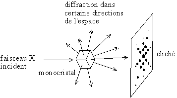

Multislice method for STEM¶
From the paper“A Streaming Multi-GPU Implementation ofImage Simulation Algorithms for Scanning Transmission Electron Microscopy”* of Alan Pryor Jr., Colin Ophus and Jianwei Miao*
This method consists of two main steps:¶
The multislice method is straightforward to implement and is quite efficient for plane-wave or single-probe diffraction simulations.
The first is calculation of the projected potentials from all atoms into a series of 2D slices.
Second, the electron wave is initialized and propagated through the sample.
[1]:
import pyprismatic as pr
import h5py as h5
import numpy as np
import matplotlib.pyplot as plt
from numpy.fft import fft, ifft, fft2, ifft2, fftshift, ifftshift
1. Calculation of the Projected Potentials¶
There we use pyprismatic to do a simulation, then export the ppotentials from the resulting file.
[2]:
INPUTLINK = "SI100.XYZ" # link to the .XYZ file with the structure's atoms coordinates
OUTPUTLINK = "output.h5" # link to the hdf output of the simulation
PARAMETERLINK = "parameters.txt" # link to save the file with the parameters of the simulation
# We initialize the meta object with all the simulations parameters
meta = pr.Metadata(filenameAtoms=INPUTLINK, filenameOutput=OUTPUTLINK)
# Then we edit some of the parameters to save the simulation datas
meta.readParameters(PARAMETERLINK)
# meta.writeParameters(PARAMETERLINK)
meta.savePotentialSlices = 1
meta.saveDPC_CoM = 1
meta.save2DOutput = 1
meta.save3DOutput = 1
meta.save4DOutput = 0
# We save the acceleration voltage of the electron beams (in V)
acc_ = meta.E0
# You can call the toString() method of the metadata object to see all it's parameters
# meta.toString()
# Finally we run the simulation
meta.go()
print("Simulation from the atomic structure ({}) done.".format(INPUTLINK))
print("Output datas saved in {}".format(OUTPUTLINK))
print("Simulation parameters saved in {}".format(PARAMETERLINK))
print("\nSimulation Acceleration Voltage = {} kiloVolt".format(acc_/1000))
Simulation from the atomic structure (SI100.XYZ) done.
Output datas saved in output.h5
Simulation parameters saved in parameters.txt
Simulation Acceleration Voltage = 90.0 kiloVolt
[3]:
#Recursively find the subfiles and display the structure like the tree function
def recursiveHDF(f, pathstring=''):
#Test if it is an hdf subfolder
if hasattr(f, 'keys'):
#List the subkeys of this folder
subkeys = list(f.keys())
#Test if it is empty
if len(subkeys) == 0:
print(pathstring + '└─── empty' )
else:
#Print every subdirectory
for s in range(len(subkeys)):
subkey = subkeys[s]
if(s+1==len(subkeys)):
print(pathstring + '└─── ' + subkey)
recursiveHDF(f[subkey], pathstring+' ')
else:
print(pathstring + '├─── ' + subkey)
recursiveHDF(f[subkey], pathstring+'│ ')
else:
print(pathstring + '└─── matrix' + str(f.shape))
#Display multiple images on the same line
def displayLine(images, labels):
n = len(images)
fig=plt.figure(figsize=(20, 15/n))
for i in range(n):
fig.add_subplot(1, n, i+1)
plt.title(labels[i])
plt.imshow(images[i])
plt.colorbar()
plt.show()
# We open the output file for reading with the H5py library (HDF5 file)
f = h5.File(OUTPUTLINK, 'r')
# We use the recursiveHDF function to recursively read the file
# recursiveHDF(f)
# We then read the datas stored from the Projected potential computation
potential = f['4DSTEM_simulation/data/realslices/ppotential/realslice'][()] # computed slices of the atoms potential
# We also get the axis of the datas, X and Y for the 2D plane coordinates position, and Z for the slice position (thickness)
Xaxis = f['4DSTEM_simulation/data/realslices/ppotential/dim1'][()] # potential slice X axis (in Å)
Yaxis = f['4DSTEM_simulation/data/realslices/ppotential/dim2'][()] # potential slice Y axis (in Å)
Zaxis = f['4DSTEM_simulation/data/realslices/ppotential/dim3'][()] # potential slice Z axis (in Å)
# We get the size of the potential slice dimensions (in Px)
Xdim, Ydim, Zdim = potential.shape
# We get the scale of the pixels for the slice dimensions in the direct space (in Å)
Xscale, Yscale, Zscale = [(Xaxis[1] - Xaxis[0]), (Yaxis[1] - Yaxis[0]), (Zaxis[1] - Zaxis[0])]
print("Potentials for: {} slices".format(Zdim))
print("Thickness: {}Å".format(Zscale))
print("Pixels size: {}Åx{}Å".format(Xscale, Yscale))
print("Dimension: {}x{} ({} pixels)".format(Xdim, Ydim, Xdim*Ydim))
print("Dimension: {}Åx{}Å".format(Xscale*Ydim, Yscale*Ydim))
# We display the projected potential slices
displayLine([np.matrix(potential[:,:,i]) for i in range(Zdim)], ["Potential Slice {} \n min = {}; max = {}".format(i, np.min(potential[:,:,i]), np.max(potential[:,:,i])) for i in range(Zdim)])
# We close the .h5 file to avoid conflits
f.flush()
f.close()
Potentials for: 3 slices
Thickness: 2.0Å
Pixels size: 0.10181249678134918Åx0.10181249678134918Å
Dimension: 160x160 (25600 pixels)
Dimension: 16.28999948501587Åx16.28999948501587Å
2. Initialisation and propagation of the electron waves throug the sample¶
[4]:
m0 = 9.109383e-31 # Electron mass (in kg)
e_ = 1.602177e-19 # Elementary charge (in coulomb)
c_ = 299792458 # Light speed (in m/s)
h_ = 6.62607e-34 # Planck constant in (m2 kg/s)
print("beam acceleration = {} kV".format(acc_/1000))
# We compute the electron beam energy with the electrong beam voltage
E0 = m0 * c_ * c_
E1 = e_ * acc_
# We compute the Wave length (in Å)
lambda_ = h_ * c_/ np.sqrt(2*E0*E1 + E1*E1) * 1e10
print("lambda_ = {}Å".format(lambda_))
# Beam interaction (in V-1 A-1)
# I prefer to write sigma_ like this because, the unit of sigma are then straightforward.
sigma_ = 2.*np.pi/lambda_/acc_ * (E0+E1)/(2*E0+E1)
print("sigma_ = {}V-1 A-1".format(sigma_))
# We initialize the waves functions as a matrix of the same shape as the slices
# https://en.wikipedia.org/wiki/Wave_function
electronWaves = np.zeros(shape=(Xdim, Ydim, Zdim), dtype=np.complex)
2.1 First the complex electron wave \(\psi\) representing the initial converged probe is defined, typically as an Airy disk function [c]. This probe is positioned at the desired location on the sample surface in realspace [d].¶

[5]:
# We compute the input probe in the condenser aperture plane
# rec_inputProbe is the input wave function in the condensor aperture plane. Radius is linked to the condensor aperture radius
# TAKE CARE OF THE UNITS : indeed there is a 'demagnification' between the condensor aperture and the 'sample' conjugated plane
# Without this demagnification radius, to go from the condensor aperture plane to the input plane of the sample, one should apply
# an inverse Fourier Transform
# For the units, the easiest is to work with angles (radian is in fact no physical units !) and take for reference the angles
# without demagnification i.e. a demagnification equal to 1, i.e. use the sample (direct space) and its reciprocal space (
# calibrated in radian using the relationship between reciprocal vectors and angles ( lambda g = alpha )
# Radius is linked to the condensor aperture radius
HradiusMrad, KradiusMrad = [10, 10] # in mrad
# TAKE CARE OF THE UNITS : indeed there is a 'demagnification' between the condensor aperture and the 'sample' conjugated plane
# Without this demagnification radius, to go from the condensor aperture plane to the input plane of the sample,
# one should apply an inverse Fourier Transform
# IN FACT THE EASIEST SOLUTION FOR THE UNIT ISSUE IS TO USE THE pixel_size of the direct space !!!
# a) from the dir_pixel_size compute the rec_pixel_size b) knowing the convergence angle (in fact this is the conjugated aperture condensor size in the reciprocal space of the sample )
# compute the radius in pixel
# JLR a oublié les conventions de prismatic et trouve plus rapide pour l'instant de redéfinir les siennes
# MAEL : --> cherche à uniformiser les 2 en écrivant dir_pixel_size = prismatic_value
Hscale, Kscale, Lscale = [1/(Xdim * Xscale), 1/(Ydim * Yscale), 1/(Zdim * Zscale)] # in Angstrom-1
print("Reciprocal pixel size = {}Å-1 x {}Å-1 x {}Å-1".format(Hscale, Kscale, Lscale))
print("Direct_pixel_size = {}Å x {}Å x {}Å)\n".format(Xscale, Yscale, Zscale))
HscaleRad, KscaleRad = [lambda_ * Hscale, lambda_ * Kscale] # the reciprocal pixel size in radian
Hradius, Kradius = [HradiusMrad * 1e-3/lambda_, KradiusMrad * 1e-3/lambda_]
HradiusPix, KradiusPix = [Hradius / HscaleRad, Kradius / KscaleRad]
print("Radius in pixel = {} x {}".format(HradiusPix, KradiusPix))
print("Radius in mrad = {} x {}".format(HradiusMrad, KradiusMrad))
print("Radius in Å-1 = {} x {}".format(Hradius, Kradius))
# JLR prefers to use meshgrid as it is done in several programs working with 2D images
# xx, yy will be 2D arrays representing the column and row indexes of the images, the index origin being at the center of the image
# these arrays can then be used both in real and reciprocal spaces and pixel size values have to be used to have the correct units
# next line is a typical short python equality. JLR is not sure that this one line is better than 2 lines of codes
# it should be better to define x, y as signed integer
x, y = (np.arange(0, Xdim, dtype="float32") - np.floor(Xdim/2)), (np.arange(0, Ydim, dtype="float32") - np.floor(Ydim/2))
xx, yy = np.meshgrid(x,y)
fx, fy = xx*Hscale, yy*Hscale
#aperture_ = fx**2 + fy**2 < Hradius**2 # condensor aperture
aperture_ = (fx/Hradius)**2 + (fy/Kradius)**2 < 1 # condensor aperture
rec_inputProbe = aperture_ + 0j
# apparently when doing an FFT in numpy, the origin should be be at the top,left corner and not at the center of the image
# so we have to apply an ifftshift or fftshift (JLR does not see the difference ? ) to correct for that.
inputProbe = fftshift(ifft2(ifftshift(rec_inputProbe)))
norm = np.linalg.norm(inputProbe)
inputProbe /= norm
# il serait egalement bien de normaliser la fonction d'onde (normalement elle devrait aller à 0 en bord de boite sinon le nombre de pixel est pas suffisant ...)
print("\nmax_probe = {}\n{} norm = {}".format(np.max(inputProbe), np.linalg.norm(inputProbe), norm))
displayLine([np.real(rec_inputProbe), np.real(inputProbe), np.imag(inputProbe)],
["Probe (Reciprocal Space-condensor Plane)", "Input Probe (Real Space) ", "probe (imaginary) "])
beam acceleration = 90.0 kV
lambda_ = 0.039191605264512826Å
sigma_ = 0.0009627511851912703V-1 A-1
Reciprocal pixel size = 0.06138735614570376Å-1 x 0.06138735614570376Å-1 x 0.16666666666666666Å-1
Direct_pixel_size = 0.10181249678134918Å x 0.10181249678134918Å x 2.0Å)
Radius in pixel = 106.05593229234358 x 106.05593229234358
Radius in mrad = 10 x 10
Radius in Å-1 = 0.25515668298115846 x 0.25515668298115846
max_probe = (0.04718646522044221+0j)
0.9999999999999999 norm = 0.047186465220442175

Espace direct et réciproque ?¶
1 |
2 |
|---|---|
|
 |

“En diffraction, le réseau réciproque apparaît comme le transformé de Fourier de l’espace réel” Explications réciproque cristallo
2.2 Next, this probe is propagated through the sample’s potential slices by alternating two steps¶
where \(\sigma\) is the beam-sample interaction constant, and \(V^{2D}_{p} (\overrightarrow{r})\) is the 2D electrostatic potential of all atoms inside slice \(p\), integrated over the slice along the beam direction from the 3D potential.
[6]:
# Interaction with potential
# https://fr.wikipedia.org/wiki/Espace_réciproque
# https://fr.wikipedia.org/wiki/Réseau_réciproque
# complex(0,1) = 1j = 1.0j
# Transmission of the input probe in the slice with the potentials
def transmission(inputProbes, projectedPotential):
return inputProbes*np.exp(1j*sigma_*projectedPotential)
electronWaves[:,:,0] = transmission(inputProbe, potential[:,:,0])
displayLine([electronWaves[:,:,0].real, electronWaves[:,:,0].imag],
["Real Part" , "Imaginary Part"])

where \(\lambda\) is the electron wavelength, \(\Psi(q)=F \{ \psi(r)\}\) is the Fourier transform of \(\psi(\overrightarrow{r})\), \(\overrightarrow{q} =(q_{x}, q_{y})\) is the 2D coordinate vector for Fourier space, and the subscript \(p\) refers to the slice index.
[7]:
# Propagation in vacuum over the distance t_
# wave_in is the initial wave funtion expressed in the direct space
# It seems better to store the wave function only in the direct space
# (apparently prismatic has 2 arrays for the wavefunctions:
# one in the direct space and one in the reciprocal space (to check) )
propagator = np.exp(-1j*np.pi*lambda_*(fx**2+fy**2)*Zscale)
def propagate(wave_in):
wave_out = ifft2(fftshift(fft2(wave_in) * propagator) )
displayLine([propagator.real, propagator.imag, wave_out.real, wave_out.imag],
["Propagator real", "Propagator imag", "Wave real","Wave imag"])
return wave_out
electronWaves[:,:,1] = propagate(electronWaves[:,:,0])
displayLine([np.abs(electronWaves[:,:,1].real), np.abs(electronWaves[:,:,1].imag)],
["Absolute slice Real" , "Absolute slice Imag"])

[8]:
# Recompute all
electronWaves = np.zeros(shape=(Xdim, Ydim, Zdim), dtype=np.complex)
electronWaves[:,:,0] = transmission(inputProbe, potential[:,:,0])
displayLine([electronWaves[:,:,0].real, electronWaves[:,:,0].imag],
["Real Part", "Imaginary Part"])
for i in range(1, Zdim):
electronWaves[:,:,i] = propagate(electronWaves[:,:,i-1])
displayLine([np.abs(electronWaves[:,:,i].real), np.abs(electronWaves[:,:,i].imag)],
["Real Part", "Imaginary Part"])
electronWaves[:,:,i] = transmission(potential[:,:,i-1], potential[:,:,i])

3. Next, the simulated output is computed¶
which is typically a subset of the probe’s intensity summed in Fourier space as shown in Fig. 1e. The steps given in Figs. 1c-e are repeated for the desired probe positions, typically a 2D grid. The simulation result can be a single virtual detector, an array of annular ring virtual detectors or the entire probe diffraction pattern for each probe location, giving a 2D, 3D or 4D output respectively.
[9]:
displayLine([electronWaves[:,:,i].real for i in range(Zdim)], ["Electron Wave {} Real Part".format(i) for i in range(Zdim)])
displayLine([electronWaves[:,:,i].imag for i in range(Zdim)], ["Electron Wave {} Imag Part".format(i) for i in range(Zdim)])